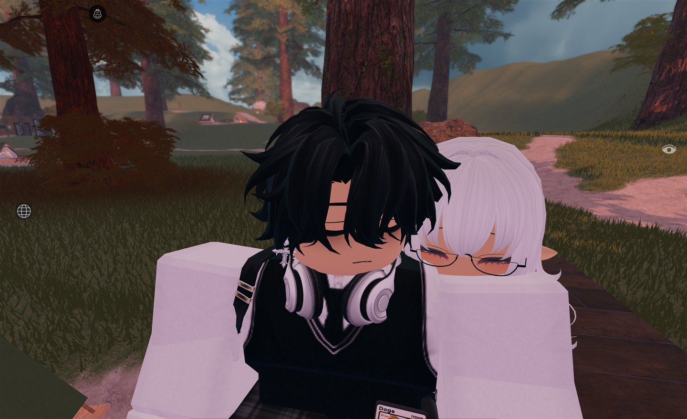
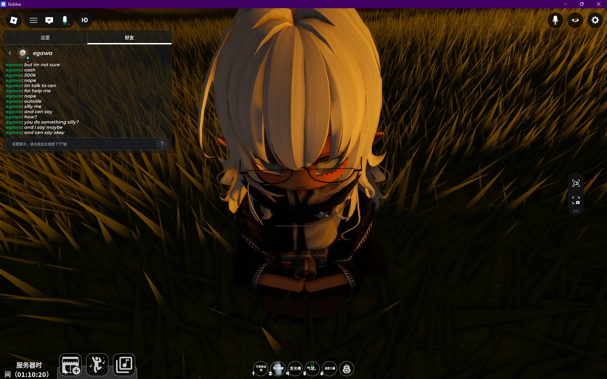
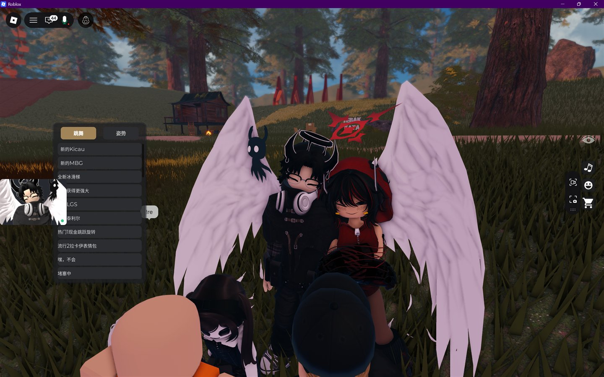
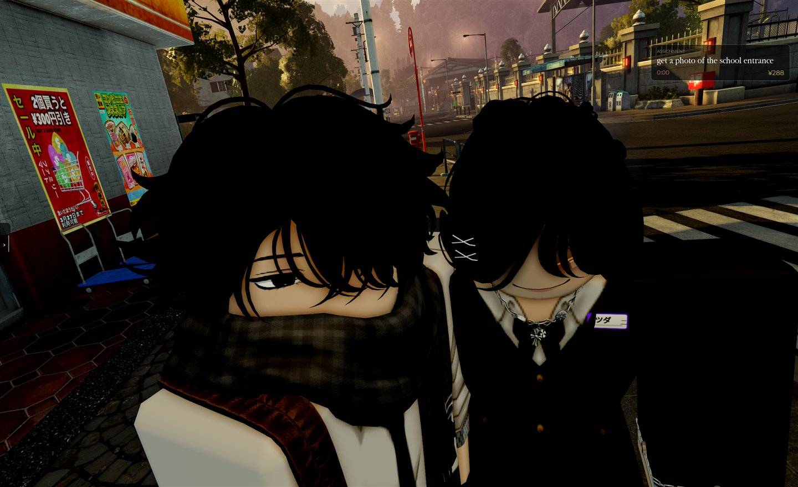
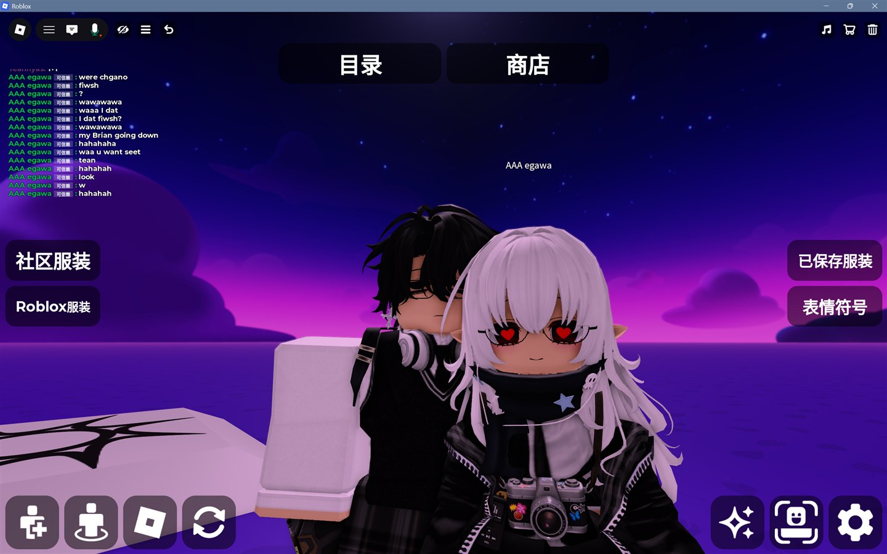
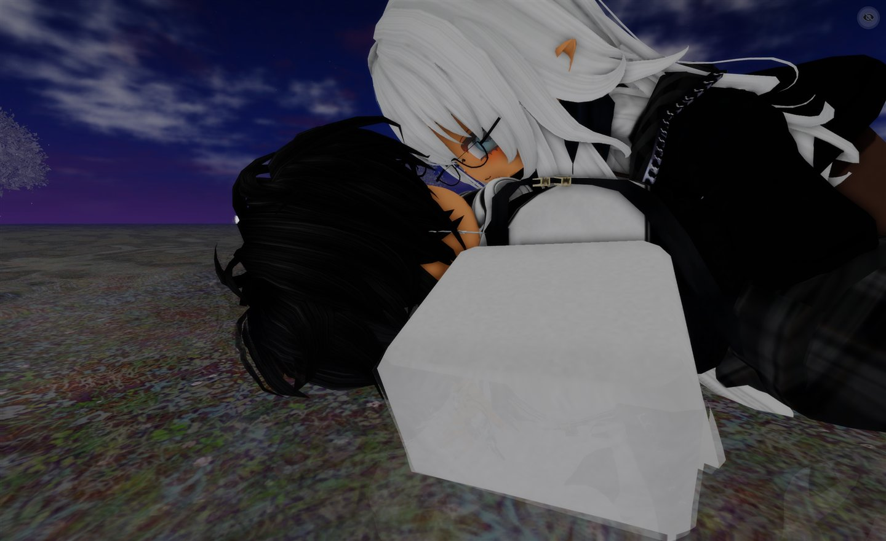
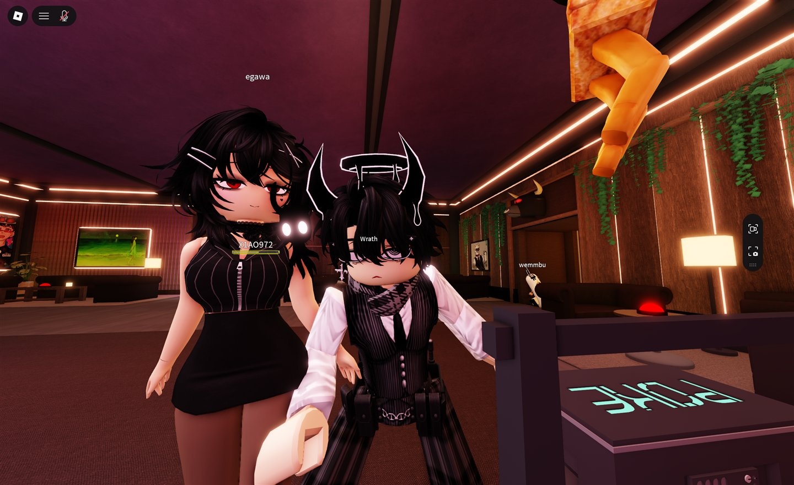

Nova, I wrote you a birthday letter, all the way from Changsha.
DATE11 / 18STATUSwaiting for you
// a birthday letter for Nova
recipient: "Nova",
origin: "Jakarta ↔ ChangSha",
reason: "because you exist",
love: true
your letter opens in
-- : -- : -- : --
Days : hours : minutes : seconds · 18 Nov, Jakarta
Gen,
I wanted to write down a few things I remember about us. I’ve forgotten a lot of what we said, but some little things stuck. The cup of water in my hand while you danced. The courage it took me to say one little word later on: “Yes?”
I was bartending in Roblox like usual, mixing drinks and handing them out. My friends were there too. You were up onstage playing music and making up your own dance with emotes. They said you were lip-syncing. I just stood there watching for a while, thinking, damn, she can dance.
I brought you a cup of water and said, “Nice dance.” I think you said, “Thanks.”
Another time at the bar, I tried calling you Egawa. I couldn’t get the pronunciation right, so it always came out sounding like Eggwa.
I was surprised to find out you played BRM5 too. I was a total newbie, so you showed me around, and we drove an infantry fighting vehicle together. I thought you were a guy and called you bro. Then you told me you were a girl.
Eventually I started calling you Gen.
I liked talking to you from the day we met. I remember sitting by the campfire with you on that chill map, talking for ages about what we liked and things we’d been through. I’ve forgotten most of the words. I still remember the campfire.
At first you were showing me how to play a game I barely knew. Before long, we were sitting by a fire talking about our lives. Whatever I’d logged on to do that day, I was happy if I got to talk to you.
One time we talked about bullying, and I got to see how brave you were. You said you used to be a total tomboy. I remember telling you how cute and cool I thought you were.
One time I logged on and thought I saw you say “Yes, honey?” in chat. I had no idea who you were talking to. I just remember suddenly going quiet and moving off to the side.
You noticed. I told you I wasn’t great with crowds. I think you said you’d help me get used to it, and then you introduced me to your friends.
I only told you about the crowd. I didn’t tell you why I’d gone quiet. You still noticed me drift away a little, and that stuck with me.
2026.07.17
We were on that same chill map. I’ve forgotten what we were talking about, but I remember it getting a little flirty. You called me honey. I worked up the courage to say, “Yes?” And just like that, we were together.
A few minutes later I was still a little dizzy. I asked, “So… we really did it?”
You said, “Yes, we did it.”
I still laugh thinking about that. It took me all that courage to say “Yes?” and a few minutes later I still had to ask if we were really together.
00:43 → 01:16 · Still no idea how sweet it got
After we got together, we kept playing music in-game and looking at your avatar together. I remember you saying “mi hou ~tiao!” for kiwi, and “hi hou” in your very own Gen English. You melted my heart.

Once someone asked where we were from, and you told them we were from China and lived together. I was so happy I almost cried hhh.
We played some MTC, but mostly we played your favorite tank simulator. You drove and I was the gunner. You even said the most romantic thing was driving a tank with me.
One night you wanted me to hear your voice more clearly, so Cen gave you their old headset. That was when I found out you played War Thunder too. You said I looked like a kid who’d just been given candy. Okay, fair. Then there was that time we rode bikes yelling “Attack the D point!” hahaha.

We were on voice chat in-game when you told me about the eruption. You were worried there might be a tsunami, and your home was close to the sea. You said that if anything happened to you, you wanted me to keep going and live my life like nothing had happened.
I started crying right there. You could hear me, and I remember you kept trying to comfort me. I was so far away. I looked up everything I could think of, just trying to find some way to help you.
Much later, I finally got TikTok working and added you. When I looked into the risk around where you lived, it seemed like your area probably wouldn’t be hit too hard. I could breathe a little easier after that.
Even before I saw your photo, I’d already thought about spending the rest of my life with you. You have such a graceful, pure heart, and you’re so much fun. You’re kind and brave, you liked me back, and you thought the most romantic thing was driving a tank with me. I felt like Jack in that movie scene. “Right then and there, Jack knew he had to marry Jenny.”
I still had no idea what you looked like. Whatever you looked like, whatever your body was like, whether you were healthy or sick, rich or poor, I wanted to spend the rest of my life with you.
Gen, can you imagine how happy I was? A girl that funny, that kind, that brave, and she liked me back. And she told me the most romantic thing in the world was driving a tank with me. I still smile every time I think about it.
And then, and then, I saw your photo for the first time.
It was like seeing a fairy from a dream, like a whole bright, gorgeous sky filling my eyes. You were so beautiful, and somehow so cute at the same time. You were already twenty-two, and you still had that high-school kind of cuteness. Oh my God, how can one lady be this cute?
One time someone was bothering you, so I went over. He said, “Hi.” I said, “Hi what?” He went, “Ow, sorry,” and left. The two of us just stood there laughing.
Later you made me an avatar. The tall one dressed in black, with wings and a black mask. The second it was ready, we rushed over to the chill map to try it out. You said you didn’t even know why you were so happy. You just couldn’t stop laughing.

One time you showed me your fridge out of nowhere, and there was some pretty expensive booze in there hahaha.
I remember our private BRM5 server, just the two of us sneaking and sniping our way through an entire enemy outpost. And I remember the first time you tried flying the stealth Black Hawk and crashed with me on board hahahaha.
Then there was the art we made in the tank simulator. Someone came along and wrecked our work, so we absolutely wiped the floor with them. And in Gakuran, we’d be fighting one minute and all over each other the next.

I still think about the Dragon Fruit you gave me in that game. I was really touched. Apart from my mom and grandma, you were the first girl in my life to give me a gift that precious.
Then there were all the little things we did together. Playing War Thunder Mobile, making avatars, and even doing a few bold things. Those details can stay between us hhh.

I even tried flirting with you using that newlywed line from anime about dinner, a bath, or me. Only later did I find out it was supposed to be the girl’s line hahaha. And then you teased me and called me a femboy hhhh. Watashi wa Teannyas desu~!
Sometimes I make you really happy. Sometimes I get on your nerves. I want to give you more reasons to smile and fewer reasons to cry.
I still think about that night. You’d had a hard time with your family, and after finally getting through all of that, you came back wanting to spend a lovely evening with me. I didn’t know what you’d been through. I should’ve been there to catch you and hold you. Instead I made you cry. I’m sorry, Gen. I want to listen to you more and hold you more, too.
You keep saying you’re a bad girl, that you don’t deserve me, that you’re awful, that the love you give me is toxic. Gen, to me, you really are the best, best girlfriend. Nobody’s perfect. You’re already enough. You really are.

And I still love that avatar of yours. Red eyes, short black hair, black leather jacket, fitted black skirt, and black stockings. I could look at her all day hhhh.

I still remember how it looked when we first met. You were dancing onstage. I watched for a bit and brought you a cup of water. How was I supposed to know I’d have all this to write after one little “Nice dance”?
I hope this year gives you time for the things you want to do, and room to rest when you’re tired. And I hope you have lots of moments like that day, when you’re so happy you can’t even say why and you just can’t stop laughing.
Today’s your birthday. Let’s have a good time together and be very proper about it. Well, mostly proper.
Let’s keep writing our story. Let’s love each other, be happy, and keep living well, okay, wife sama?
I feel so lucky to get to spend your birthday with you.
Happy birthday, my dear little driver and succubus. Happy birthday, my Nova!!